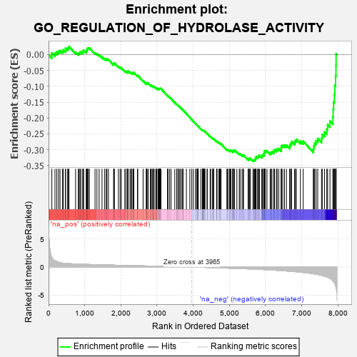

| | | Dataset | 7d |
| Phenotype | NoPhenotypeAvailable |
| Upregulated in class | na_neg |
| GeneSet | GO_REGULATION_OF_HYDROLASE_ACTIVITY |
| Enrichment Score (ES) | -0.33693284 |
| Normalized Enrichment Score (NES) | -1.1514162 |
| Nominal p-value | 0.19753087 |
| FDR q-value | 0.6962879 |
| FWER p-Value | 1.0 |
Table: GSEA Results Summary

Fig 1: Enrichment plot: GO_REGULATION_OF_HYDROLASE_ACTIVITY
Profile of the Running ES Score & Positions of GeneSet Members on the Rank Ordered List
| PROBE | GENE SYMBOL | GENE_TITLE | RANK IN GENE LIST | RANK METRIC SCORE | RUNNING ES | CORE ENRICHMENT | | 1 | WFDC8 | | | 91 | 1.777 | 0.0054 | No |
| 2 | PZP | | | 178 | 1.129 | 0.0051 | No |
| 3 | RHOH | | | 228 | 0.987 | 0.0083 | No |
| 4 | HGF | | | 276 | 0.870 | 0.0106 | No |
| 5 | CNST | | | 317 | 0.792 | 0.0131 | No |
| 6 | BAX | | | 387 | 0.711 | 0.0110 | No |
| 7 | OCRL | | | 408 | 0.691 | 0.0151 | No |
| 8 | WRN | | | 469 | 0.649 | 0.0136 | No |
| 9 | LRP1 | | | 470 | 0.648 | 0.0199 | No |
| 10 | HTRA2 | | | 527 | 0.621 | 0.0186 | No |
| 11 | MCM2 | | | 546 | 0.614 | 0.0222 | No |
| 12 | NLE1 | | | 565 | 0.609 | 0.0257 | No |
| 13 | AHSA1 | | | 747 | 0.546 | 0.0077 | No |
| 14 | TCEA1 | | | 821 | 0.526 | 0.0033 | No |
| 15 | NRDC | | | 845 | 0.521 | 0.0054 | No |
| 16 | IGBP1 | | | 869 | 0.514 | 0.0073 | No |
| 17 | HMGB2 | | | 892 | 0.507 | 0.0094 | No |
| 18 | PTPA | | | 947 | 0.497 | 0.0072 | No |
| 19 | ADRM1 | | | 948 | 0.496 | 0.0120 | No |
| 20 | DVL3 | | | 971 | 0.490 | 0.0138 | No |
| 21 | AKT1 | | | 1040 | 0.476 | 0.0097 | No |
| 22 | MEF2C | | | 1054 | 0.473 | 0.0125 | No |
| 23 | FZD10 | | | 1065 | 0.470 | 0.0158 | No |
| 24 | AIFM1 | | | 1072 | 0.469 | 0.0195 | No |
| 25 | MYO1D | | | 1099 | 0.464 | 0.0206 | No |
| 26 | SRC | | | 1128 | 0.459 | 0.0214 | No |
| 27 | GIT2 | | | 1285 | 0.432 | 0.0055 | No |
| 28 | TBCD | | | 1338 | 0.422 | 0.0028 | No |
| 29 | DOCK7 | | | 1398 | 0.410 | -0.0008 | No |
| 30 | TIMP2 | | | 1478 | 0.394 | -0.0072 | No |
| 31 | SOS1 | | | 1547 | 0.384 | -0.0123 | No |
| 32 | NPRL3 | | | 1592 | 0.375 | -0.0143 | No |
| 33 | BIRC8 | | | 1615 | 0.372 | -0.0136 | No |
| 34 | CSN2 | | | 1656 | 0.363 | -0.0153 | No |
| 35 | FNIP1 | | | 1798 | 0.338 | -0.0302 | No |
| 36 | ABR | | | 1812 | 0.335 | -0.0286 | No |
| 37 | MSH2 | | | 1819 | 0.334 | -0.0262 | No |
| 38 | HACD3 | | | 1932 | 0.315 | -0.0376 | No |
| 39 | BRSK2 | | | 1979 | 0.308 | -0.0406 | No |
| 40 | RAF1 | | | 2011 | 0.303 | -0.0417 | No |
| 41 | GMIP | | | 2108 | 0.290 | -0.0512 | No |
| 42 | PSME4 | | | 2143 | 0.285 | -0.0529 | No |
| 43 | NPRL2 | | | 2184 | 0.278 | -0.0554 | No |
| 44 | SYK | | | 2186 | 0.278 | -0.0528 | No |
| 45 | TIPRL | | | 2200 | 0.277 | -0.0518 | No |
| 46 | PSMF1 | | | 2251 | 0.268 | -0.0557 | No |
| 47 | AIP | | | 2281 | 0.263 | -0.0569 | No |
| 48 | REST | | | 2308 | 0.259 | -0.0578 | No |
| 49 | DOCK8 | | | 2341 | 0.254 | -0.0594 | No |
| 50 | BCAS3 | | | 2352 | 0.253 | -0.0583 | No |
| 51 | OXA1L | | | 2355 | 0.252 | -0.0561 | No |
| 52 | PGAM5 | | | 2457 | 0.235 | -0.0669 | No |
| 53 | UBXN1 | | | 2467 | 0.232 | -0.0658 | No |
| 54 | VAV3 | | | 2614 | 0.210 | -0.0826 | No |
| 55 | MARF1 | | | 2704 | 0.198 | -0.0922 | No |
| 56 | AGAP4 | | | 2705 | 0.198 | -0.0903 | No |
| 57 | PHB2 | | | 2712 | 0.197 | -0.0891 | No |
| 58 | SLIT2 | | | 2724 | 0.195 | -0.0887 | No |
| 59 | FNTA | | | 2755 | 0.190 | -0.0907 | No |
| 60 | ASAP2 | | | 2815 | 0.181 | -0.0966 | No |
| 61 | RIC8A | | | 2833 | 0.179 | -0.0971 | No |
| 62 | UCHL5 | | | 2864 | 0.172 | -0.0993 | No |
| 63 | PDCD5 | | | 2885 | 0.169 | -0.1002 | No |
| 64 | FGFR2 | | | 2895 | 0.167 | -0.0998 | No |
| 65 | ELL | | | 2921 | 0.163 | -0.1014 | No |
| 66 | MTCH1 | | | 2966 | 0.155 | -0.1056 | No |
| 67 | PCSK5 | | | 2983 | 0.152 | -0.1062 | No |
| 68 | RRP1B | | | 2986 | 0.152 | -0.1050 | No |
| 69 | WNT4 | | | 3023 | 0.146 | -0.1082 | No |
| 70 | LEF1 | | | 3037 | 0.144 | -0.1085 | No |
| 71 | BIRC6 | | | 3047 | 0.143 | -0.1083 | No |
| 72 | ABCE1 | | | 3051 | 0.143 | -0.1073 | No |
| 73 | PROS1 | | | 3070 | 0.141 | -0.1083 | No |
| 74 | MAP2 | | | 3074 | 0.140 | -0.1073 | No |
| 75 | HDAC1 | | | 3086 | 0.138 | -0.1074 | No |
| 76 | CHP1 | | | 3089 | 0.138 | -0.1063 | No |
| 77 | GPX1 | | | 3109 | 0.135 | -0.1075 | No |
| 78 | ACAP1 | | | 3288 | 0.107 | -0.1294 | No |
| 79 | SMAD3 | | | 3303 | 0.105 | -0.1302 | No |
| 80 | UBE2O | | | 3348 | 0.097 | -0.1349 | No |
| 81 | DDX3X | | | 3388 | 0.091 | -0.1391 | No |
| 82 | RGS8 | | | 3490 | 0.079 | -0.1513 | No |
| 83 | PIN1 | | | 3543 | 0.069 | -0.1574 | No |
| 84 | PRDX5 | | | 3547 | 0.068 | -0.1571 | No |
| 85 | RSU1 | | | 3585 | 0.062 | -0.1613 | No |
| 86 | MAPK3 | | | 3589 | 0.062 | -0.1611 | No |
| 87 | RIC1 | | | 3627 | 0.055 | -0.1653 | No |
| 88 | FIS1 | | | 3654 | 0.051 | -0.1682 | No |
| 89 | DHX9 | | | 3693 | 0.044 | -0.1726 | No |
| 90 | NF1 | | | 3713 | 0.040 | -0.1747 | No |
| 91 | HSF1 | | | 3718 | 0.039 | -0.1749 | No |
| 92 | SFI1 | | | 3810 | 0.026 | -0.1863 | No |
| 93 | SGSM1 | | | 3907 | 0.009 | -0.1986 | No |
| 94 | EVI5 | | | 3960 | 0.001 | -0.2053 | No |
| 95 | PCIF1 | | | 4004 | -0.009 | -0.2108 | No |
| 96 | SFRP2 | | | 4065 | -0.018 | -0.2183 | No |
| 97 | FICD | | | 4087 | -0.022 | -0.2208 | No |
| 98 | MTOR | | | 4114 | -0.025 | -0.2239 | No |
| 99 | ABL1 | | | 4125 | -0.027 | -0.2250 | No |
| 100 | MSH6 | | | 4129 | -0.028 | -0.2251 | No |
| 101 | CRK | | | 4139 | -0.031 | -0.2260 | No |
| 102 | TIMP1 | | | 4209 | -0.043 | -0.2344 | No |
| 103 | AGAP3 | | | 4251 | -0.050 | -0.2392 | No |
| 104 | ARL2 | | | 4254 | -0.050 | -0.2390 | No |
| 105 | PCID2 | | | 4258 | -0.051 | -0.2389 | No |
| 106 | ADAP1 | | | 4261 | -0.052 | -0.2387 | No |
| 107 | PSME3 | | | 4280 | -0.056 | -0.2404 | No |
| 108 | WNT11 | | | 4282 | -0.056 | -0.2400 | No |
| 109 | TDG | | | 4290 | -0.058 | -0.2404 | No |
| 110 | RGS3 | | | 4293 | -0.059 | -0.2401 | No |
| 111 | BAG4 | | | 4314 | -0.061 | -0.2421 | No |
| 112 | CD109 | | | 4325 | -0.064 | -0.2427 | No |
| 113 | ARF4 | | | 4383 | -0.073 | -0.2494 | No |
| 114 | MTMR9 | | | 4387 | -0.074 | -0.2490 | No |
| 115 | LRRK2 | | | 4467 | -0.087 | -0.2584 | No |
| 116 | HIP1 | | | 4485 | -0.092 | -0.2597 | No |
| 117 | RIN2 | | | 4535 | -0.101 | -0.2650 | No |
| 118 | NTRK2 | | | 4543 | -0.104 | -0.2649 | No |
| 119 | RGS6 | | | 4559 | -0.107 | -0.2658 | No |
| 120 | RGS7 | | | 4565 | -0.108 | -0.2654 | No |
| 121 | NMUR2 | | | 4646 | -0.127 | -0.2745 | No |
| 122 | PPME1 | | | 4655 | -0.129 | -0.2743 | No |
| 123 | FGFR3 | | | 4656 | -0.129 | -0.2731 | No |
| 124 | CPEB2 | | | 4709 | -0.141 | -0.2784 | No |
| 125 | PXK | | | 4726 | -0.144 | -0.2791 | No |
| 126 | FBLN1 | | | 4748 | -0.149 | -0.2804 | No |
| 127 | PLCG1 | | | 4770 | -0.151 | -0.2816 | No |
| 128 | CASP1 | | | 4932 | -0.185 | -0.3006 | No |
| 129 | TBCK | | | 4937 | -0.186 | -0.2993 | No |
| 130 | ARAP1 | | | 4963 | -0.191 | -0.3007 | No |
| 131 | KLF4 | | | 5005 | -0.198 | -0.3041 | No |
| 132 | RIN3 | | | 5010 | -0.199 | -0.3027 | No |
| 133 | WDR81 | | | 5024 | -0.203 | -0.3024 | No |
| 134 | PDPK1 | | | 5043 | -0.207 | -0.3027 | No |
| 135 | DRD2 | | | 5088 | -0.221 | -0.3063 | No |
| 136 | DDX11 | | | 5102 | -0.225 | -0.3058 | No |
| 137 | SMAP2 | | | 5105 | -0.226 | -0.3039 | No |
| 138 | MMP9 | | | 5108 | -0.227 | -0.3019 | No |
| 139 | UBE2Z | | | 5137 | -0.234 | -0.3033 | No |
| 140 | FLCN | | | 5140 | -0.235 | -0.3013 | No |
| 141 | IPO5 | | | 5207 | -0.248 | -0.3074 | No |
| 142 | EPHA4 | | | 5273 | -0.265 | -0.3132 | No |
| 143 | MAGI2 | | | 5295 | -0.269 | -0.3134 | No |
| 144 | EPHA1 | | | 5349 | -0.285 | -0.3174 | No |
| 145 | GRIN1 | | | 5381 | -0.291 | -0.3186 | No |
| 146 | PRDX3 | | | 5389 | -0.293 | -0.3167 | No |
| 147 | TFPI2 | | | 5516 | -0.324 | -0.3298 | No |
| 148 | FGFR1 | | | 5543 | -0.332 | -0.3300 | No |
| 149 | PDE6D | | | 5551 | -0.333 | -0.3277 | No |
| 150 | NDE1 | | | 5578 | -0.339 | -0.3278 | No |
| 151 | WNK1 | | | 5650 | -0.362 | -0.3334 | Yes |
| 152 | CASP8 | | | 5678 | -0.369 | -0.3334 | Yes |
| 153 | MTCL1 | | | 5697 | -0.374 | -0.3321 | Yes |
| 154 | CLPX | | | 5717 | -0.381 | -0.3309 | Yes |
| 155 | DGKI | | | 5725 | -0.384 | -0.3281 | Yes |
| 156 | DAP | | | 5732 | -0.386 | -0.3251 | Yes |
| 157 | ENSA | | | 5739 | -0.388 | -0.3222 | Yes |
| 158 | GRTP1 | | | 5780 | -0.400 | -0.3235 | Yes |
| 159 | SNX13 | | | 5801 | -0.406 | -0.3222 | Yes |
| 160 | BBS4 | | | 5806 | -0.407 | -0.3188 | Yes |
| 161 | RGS5 | | | 5831 | -0.414 | -0.3179 | Yes |
| 162 | SET | | | 5895 | -0.434 | -0.3218 | Yes |
| 163 | DOCK1 | | | 5908 | -0.438 | -0.3192 | Yes |
| 164 | RAB4A | | | 5919 | -0.441 | -0.3162 | Yes |
| 165 | AGFG1 | | | 5955 | -0.457 | -0.3163 | Yes |
| 166 | SGSM3 | | | 5957 | -0.457 | -0.3120 | Yes |
| 167 | TTBK1 | | | 5969 | -0.460 | -0.3090 | Yes |
| 168 | TPM2 | | | 5970 | -0.460 | -0.3046 | Yes |
| 169 | RGS20 | | | 5995 | -0.471 | -0.3032 | Yes |
| 170 | PPT1 | | | 6038 | -0.485 | -0.3039 | Yes |
| 171 | DLG2 | | | 6126 | -0.513 | -0.3102 | Yes |
| 172 | ROCK1 | | | 6152 | -0.520 | -0.3084 | Yes |
| 173 | RAG1 | | | 6176 | -0.530 | -0.3063 | Yes |
| 174 | TPM1 | | | 6226 | -0.545 | -0.3073 | Yes |
| 175 | RGN | | | 6233 | -0.547 | -0.3029 | Yes |
| 176 | TFAP4 | | | 6254 | -0.556 | -0.3001 | Yes |
| 177 | IFT57 | | | 6307 | -0.579 | -0.3012 | Yes |
| 178 | BOD1 | | | 6320 | -0.583 | -0.2972 | Yes |
| 179 | BIRC3 | | | 6366 | -0.603 | -0.2972 | Yes |
| 180 | MALT1 | | | 6432 | -0.634 | -0.2994 | Yes |
| 181 | ABCA2 | | | 6433 | -0.634 | -0.2933 | Yes |
| 182 | ARL1 | | | 6438 | -0.636 | -0.2877 | Yes |
| 183 | SOX2 | | | 6477 | -0.652 | -0.2864 | Yes |
| 184 | PLIN5 | | | 6524 | -0.672 | -0.2858 | Yes |
| 185 | ROBO1 | | | 6577 | -0.699 | -0.2858 | Yes |
| 186 | TMED2 | | | 6665 | -0.746 | -0.2899 | Yes |
| 187 | RFFL | | | 6674 | -0.749 | -0.2837 | Yes |
| 188 | EGFR | | | 6708 | -0.765 | -0.2806 | Yes |
| 189 | GSK3B | | | 6719 | -0.768 | -0.2745 | Yes |
| 190 | NET1 | | | 6803 | -0.816 | -0.2773 | Yes |
| 191 | NMUR1 | | | 6821 | -0.828 | -0.2715 | Yes |
| 192 | RGS17 | | | 6853 | -0.843 | -0.2674 | Yes |
| 193 | DNM1L | | | 6963 | -0.913 | -0.2727 | Yes |
| 194 | RNF34 | | | 7040 | -0.963 | -0.2732 | Yes |
| 195 | GRN | | | 7319 | -1.194 | -0.2976 | Yes |
| 196 | NGEF | | | 7335 | -1.209 | -0.2879 | Yes |
| 197 | WDR35 | | | 7357 | -1.225 | -0.2788 | Yes |
| 198 | ARAP2 | | | 7397 | -1.261 | -0.2717 | Yes |
| 199 | CASP2 | | | 7442 | -1.322 | -0.2646 | Yes |
| 200 | SHOC2 | | | 7546 | -1.463 | -0.2638 | Yes |
| 201 | CALM1 | | | 7567 | -1.499 | -0.2520 | Yes |
| 202 | PDCD6 | | | 7630 | -1.615 | -0.2444 | Yes |
| 203 | CST1 | | | 7692 | -1.746 | -0.2355 | Yes |
| 204 | BOK | | | 7715 | -1.817 | -0.2208 | Yes |
| 205 | ST18 | | | 7780 | -2.007 | -0.2098 | Yes |
| 206 | TRAF2 | | | 7861 | -2.481 | -0.1962 | Yes |
| 207 | CALM3 | | | 7869 | -2.525 | -0.1728 | Yes |
| 208 | FYN | | | 7881 | -2.622 | -0.1490 | Yes |
| 209 | PLCB1 | | | 7904 | -2.841 | -0.1245 | Yes |
| 210 | PI16 | | | 7914 | -2.948 | -0.0973 | Yes |
| 211 | ARRB1 | | | 7935 | -3.377 | -0.0674 | Yes |
| 212 | XIAP | | | 7947 | -3.696 | -0.0333 | Yes |
| 213 | DAPK1 | | | 7950 | -3.767 | 0.0027 | Yes |
Table: GSEA details [plain text format]
Fig 2: GO_REGULATION_OF_HYDROLASE_ACTIVITY: Random ES distribution
Gene set null distribution of ES for GO_REGULATION_OF_HYDROLASE_ACTIVITY